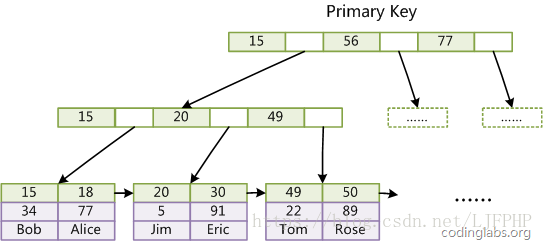
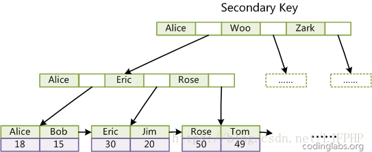
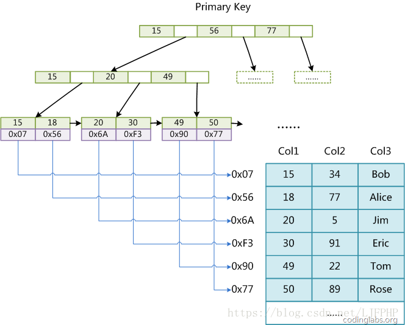

存储引擎
MyISAM 和 InnoDB 有什么不同？
| MyISAM | InnoDB | |
|---|---|---|
| 事务 | 不支持 | 支持 |
| 表级锁 | 支持 | 支持 |
| 行级锁 | 不支持 | 支持 |
| MVCC（多版本并发控制） | 不支持 | 支持 |
| 外键 | 不支持 | 支持 |
| 全文索引 | 支持 | 不支持 |
MyISAM 与 InnoDB 索引方式的区别？
- InnoDB（索引组织表）：使用的聚簇索引，数据文件本身就是索引文件（主键索引与行记录是存储在一起的）。表数据文件本身就是按 B+Tree 组织的一个索引结构，这棵树的叶节点 data 域保存了完整的数据记录。
- 没有单独区域存储行记录
- 主键索引的叶子节点，存储主键，与对应行记录（而不是指针）

而对于辅助索引，InnoDB采用的方式是在叶子页中保存主键值，通过这个主键值来回表（上图）查询到一条完整记（二次 IO），因此按辅助索引检索实际上进行了二次查询，效率肯定是没有按照主键检索高的。

- MyISAM（堆组织表）：使用的是非聚簇索引。索引文件和数据文件是分离的，索引文件仅保存记录所在页的指针（物理位置），通过这些地址来读取页，进而读取被索引的行。
- 行记录单独存储
- id 为主键，有一棵 id 的索引树，叶子指向行记录
